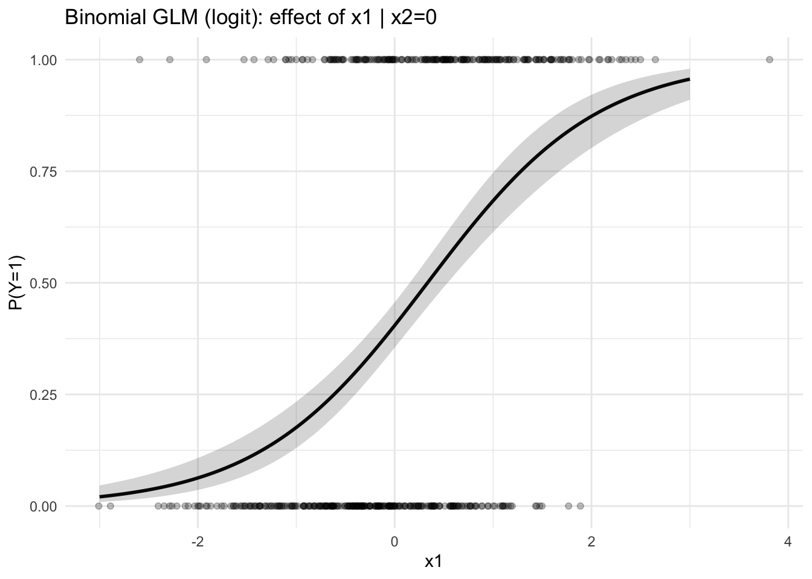
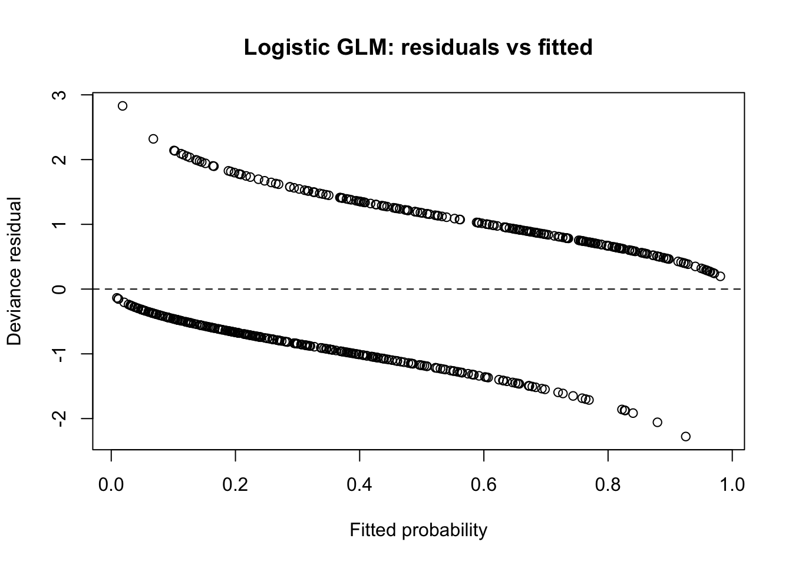
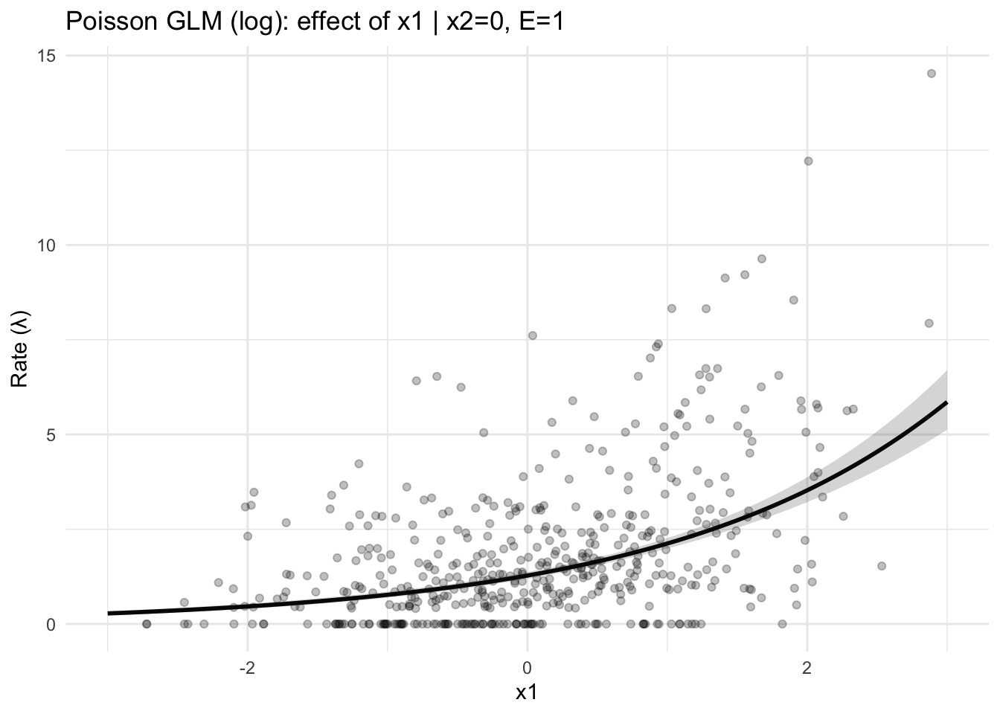

The Generalized Linear Model (GLM) represents a major unifying step in the history of statistics.
Before 1972, researchers used a collection of specialized methods for different kinds of data:
Continuous data: Multiple linear regression (Normal distribution, identity link)
Group mean comparisons: ANOVA (Normal distribution, identity link)
Binary data: Logistic or probit regression (Binomial distribution, logit/probit link)
Each model had its own estimation rules and assumptions.
Nelder and Wedderburn (1972) proposed GLMs as a single framework that could describe all of these models through three shared components:
A random component:
The response variable \(Y_i\) follows a distribution from the exponential family (e.g., Normal, Binomial, Poisson, Gamma).
A systematic component:
Predictors enter linearly through \[
\eta_i = \mathbf{x}_i^\top \boldsymbol{\beta}.
\]
A link function:
Connects the expected value \(\mu_i = E[Y_i]\) to the linear predictor: \[
g(\mu_i) = \eta_i.
\]
With this formulation, the same estimation algorithm — Iteratively Reweighted Least Squares (IRLS) — can be used across models.
GLMs thus generalized linear regression to non-normal data while keeping the interpretability of regression coefficients.
4.1.2 Chronology of Key Ideas
Adapted from Lindsey’s summary of McCullagh & Nelder (who themselves drew from Stiegler), the historical path toward GLMs developed gradually:
Period
Development
Distribution & Link
Key Contributors
Early 19th century
Multiple linear regression — foundation of least squares.
Normal, identity
Legendre, Gauss
1920s–1935
ANOVA formalized — partitioning of variance.
Normal, identity
Fisher
1922
Likelihood function introduced — general approach to inference.
Any
Fisher
1922
Dilution assays for dose–response data.
Binomial, complementary log–log
Fisher
1934
Exponential family identified — distributions with sufficient statistics.
—
Fisher
1935
Probit analysis for quantal response data.
Binomial, probit
Bliss
1944–1952
Logit model for proportions.
Binomial, logit
Berkson; Dyke & Patterson
1960
Item response theory (Rasch model).
Bernoulli, logit
Rasch
1963
Log-linear models for count data.
Poisson, log
Birch
1965–1967
Regression models for survival data.
Exponential, log or reciprocal
Feigl & Zelen; Zippin & Armitage; Glasser
1966
Inverse polynomials extended regression to Gamma data.
Gamma, reciprocal
Nelder
1972
Generalized Linear Models unified all the above under one theory and algorithm.
Exponential family, general link
Nelder & Wedderburn
4.2 Conceptual Unification
By the early 1970s, it became clear that many well-known models were specific cases of a broader principle.
Nelder and Wedderburn (1972) formally expressed this as:
All these models (linear, logistic, Poisson, Gamma, etc.) share the same likelihood structure.
They can all be estimated through the same maximum-likelihood algorithm.
Diagnostics, residuals, and hypothesis tests could be made consistent across model types.
In short, GLMs provided the long-sought unification of statistical modeling, bringing together 150 years of development—from Gauss’s least squares and Fisher’s likelihood theory to modern regression frameworks.
4.3 References
Legendre, A. M. (1805). Nouvelles méthodes pour la détermination des orbites des comètes.
Gauss, C. F. (1809). Theoria motus corporum coelestium in sectionibus conicis solem ambientium.
Fisher, R. A. (1922). On the mathematical foundations of theoretical statistics.Philosophical Transactions of the Royal Society A.
Bliss, C. I. (1935). The method of probits.Science, 79(2037), 38–39.
Berkson, J. (1944). Application of the logistic function to bio-assay.JASA, 39(227), 357–365.
Rasch, G. (1960). Probabilistic models for some intelligence and attainment tests.
Birch, M. W. (1963). Maximum likelihood in three-way contingency tables.JASA, 58, 1071–1081.
Feigl, P., & Zelen, M. (1965). Estimation of exponential survival probabilities with concomitant information.Biometrics, 21, 826–838.
Nelder, J. A., & Wedderburn, R. W. M. (1972). Generalized Linear Models.JRSS A, 135(3), 370–384.
McCullagh, P., & Nelder, J. A. (1989). Generalized Linear Models (2nd ed.). Chapman & Hall.
Lindsey, J. K. (1997). Applying Generalized Linear Models. Springer.
4.4 Expressing the GLM Mathematically
A single-parameter exponential family can be expressed as:
Call:
glm(formula = y ~ x1 + x2, family = binomial(), data = df)
Coefficients:
Estimate Std. Error z value Pr(>|z|)
(Intercept) -0.3858 0.1078 -3.579 0.000344 ***
x1 1.1572 0.1318 8.780 < 2e-16 ***
x2 -0.7521 0.1107 -6.794 1.09e-11 ***
---
Signif. codes: 0 '***' 0.001 '**' 0.01 '*' 0.05 '.' 0.1 ' ' 1
(Dispersion parameter for binomial family taken to be 1)
Null deviance: 685.93 on 499 degrees of freedom
Residual deviance: 530.03 on 497 degrees of freedom
AIC: 536.03
Number of Fisher Scoring iterations: 4
# Effect curve for x1 (x2 fixed at 0), with 95% CI on response scalelibrary(ggplot2)xgrid <-data.frame(x1 =seq(-3, 3, length.out =200), x2 =0)pred <-predict(m_logit, newdata = xgrid, type ="link", se.fit =TRUE)eta_hat <- pred$fitse_eta <- pred$se.fitp_hat <-plogis(eta_hat)lo <-plogis(eta_hat -1.96*se_eta)hi <-plogis(eta_hat +1.96*se_eta)ggplot() +geom_point(aes(x = x1, y = y), data = df, alpha =0.25) +geom_line(aes(x = xgrid$x1, y = p_hat), linewidth =1) +geom_ribbon(aes(x = xgrid$x1, ymin = lo, ymax = hi), alpha =0.2) +labs(title ="Binomial GLM (logit): effect of x1 | x2=0",x ="x1", y ="P(Y=1)") +theme_minimal()

# Quick residual checkplot(fitted(m_logit), residuals(m_logit, type ="deviance"),xlab ="Fitted probability", ylab ="Deviance residual",main ="Logistic GLM: residuals vs fitted")abline(h =0, lty =2)

set.seed(2)n <-500x1 <-rnorm(n)x2 <-rnorm(n)E <-runif(n, 0.5, 2.5) # exposureeta <-0.2+0.5*x1 +0.6*x2 +log(E) # include offset in DGPlambda <-exp(eta)y <-rpois(n, lambda)dfp <-data.frame(y, x1, x2, E)m_pois <-glm(y ~ x1 + x2 +offset(log(E)), data = dfp, family =poisson())summary(m_pois)
Call:
glm(formula = y ~ x1 + x2 + offset(log(E)), family = poisson(),
data = dfp)
Coefficients:
Estimate Std. Error z value Pr(>|z|)
(Intercept) 0.24655 0.03577 6.892 5.5e-12 ***
x1 0.50714 0.02559 19.814 < 2e-16 ***
x2 0.59661 0.02793 21.359 < 2e-16 ***
---
Signif. codes: 0 '***' 0.001 '**' 0.01 '*' 0.05 '.' 0.1 ' ' 1
(Dispersion parameter for poisson family taken to be 1)
Null deviance: 1337.16 on 499 degrees of freedom
Residual deviance: 498.35 on 497 degrees of freedom
AIC: 1634.3
Number of Fisher Scoring iterations: 5
# Effect curve for x1 (x2 = 0, E = 1), with 95% CI on mean scalelibrary(ggplot2)xgrid <-data.frame(x1 =seq(-3, 3, length.out =200), x2 =0, E =1)pred <-predict(m_pois, newdata = xgrid, type ="link", se.fit =TRUE)eta_hat <- pred$fitse_eta <- pred$se.fitmu_hat <-exp(eta_hat)lo <-exp(eta_hat -1.96*se_eta)hi <-exp(eta_hat +1.96*se_eta)ggplot() +geom_point(aes(x = x1, y = y/E), data = dfp, alpha =0.25) +geom_line(aes(x = xgrid$x1, y = mu_hat), linewidth =1) +geom_ribbon(aes(x = xgrid$x1, ymin = lo, ymax = hi), alpha =0.2) +labs(title ="Poisson GLM (log): effect of x1 | x2=0, E=1",x ="x1", y ="Rate (λ)") +theme_minimal()

# Quick residual check + overdispersion diagnosticplot(fitted(m_pois), residuals(m_pois, type ="deviance"),xlab ="Fitted mean λ", ylab ="Deviance residual",main ="Poisson GLM: residuals vs fitted")abline(h =0, lty =2)
4.6 Ordinal Regression (Proportional Odds)
We observe a response $ Y $ ordinal, or a finely discretized/continuous outcome) and predictors $ x ^p$ .
We want to model the conditional cumulative distribution function (CDF)
\[
F(y \mid x) = P(Y \le y \mid x).
\]
Following Liu et al. (2017), we use a cumulative probability model (CPM), which is the same mathematical structure as an ordinal / proportional odds regression. \[
g\big( P(Y \le y \mid x) \big)
= \alpha(y) - x^\top \beta,
\tag{1}
\] where
\[ g(\cdot) \] is a link function (logit, probit, loglog, cloglog), \[ \alpha(y) \] is a nondecreasing function of the cutpoint \[ y \] (it plays the role of ordered thresholds), \[ \beta \] is a single vector of regression coefficients shared across all cutpoints (this is the proportional / parallel slopes assumption).
This is the form used in Liu et al. (2017), Modeling continuous response variables using ordinal regression.
Suppose \[Y \in \{1,2,\dots,K\}.\]
Define \[\theta_k = \alpha(k)\] for \[k=1,\dots,K-1.\]
Then (1) becomes the standard cumulative link / proportional odds model
\[
g\big( P(Y \le k \mid x) \big)
= \theta_k - x^\top \beta, \quad k = 1, \dots, K-1.
\]
\[
\log \frac{P(Y \le k \mid x)}{1 - P(Y \le k \mid x)}
= \theta_k - x^\top \beta, \quad k=1,\dots,K-1,
\] and the \[\pi_k(x)\] are obtained by the above expressions.
4.6.2 Interpretation
\(\beta\) describes how a one-unit change in a predictor shifts the entire conditional distribution of \(Y\). \(\theta_k\) locate the cutpoints between ordered categories. Using different links corresponds to assuming different latent error distributions, as listed in the paper.
4.7 Neural Net
4.7.1 McCulloch–Pitts Neuron (1943)
4.7.1.1 Model Description
A neuron fires if it receives enough excitatory input and no inhibitory input.
Let
- \(v_i(t) \in \{0,1\}\)$ activation (firing) state of neuron \(i\) at time \(t\),
- \(E_i\): set of excitatory inputs,
- \(I_i\): set of inhibitory inputs,
- \(T_i\): excitatory threshold.
A multilayer feedforward network trained by gradient descent.
Let
- Layer index \(\ell = 1, 2, \dots, L\),
- Activations \(a_j^{(\ell)}\),
- Net inputs \(z_j^{(\ell)}\),
- Weights \(w_{ij}^{(\ell)}\),
- Biases \(b_j^{(\ell)}\).
4.7.3.1 Forward Pass
For the input layer: \[
a_j^{(1)} = x_j.
\]
For each hidden or output layer: \[
z_j^{(\ell)} = \sum_i w_{ij}^{(\ell)} a_i^{(\ell-1)} + b_j^{(\ell)}, \qquad
a_j^{(\ell)} = f(z_j^{(\ell)}),
\] where (f) is a differentiable activation function (e.g. sigmoid).
The total loss (mean-squared error): \[
E = \frac{1}{2} \sum_k (t_k - a_k^{(L)})^2.
\]
\[v_i(t+1)=1\] if enough excitation and no inhibition
None (fixed logic)
Rosenblatt (1958)
\[y=\mathbf{1}\{w^\top x + b \ge 0\}\]
\[w \leftarrow w + \eta (t-y)x\]
Rumelhart et al. (1986)
\[a_j=f\!\left(\sum_i w_{ij}a_i+b_j\right)\]
\[\Delta w_{ij}=\eta a_i \delta_j\] with backpropagation
These three equations trace the mathematical evolution of neural networks:
from logical firing (McCulloch–Pitts) → learnable thresholds (Rosenblatt) → differentiable, multilayer learning (Rumelhart–Hinton–Williams).
4.8 Create visualizations of the prediction relationship
library(tidyverse)library(nnet) # for neural netlibrary(randomForest) # for random forestlibrary(MASS) # for polr (ordinal regression)set.seed(42)n <-2000X1 <-rnorm(n)X2 <-rnorm(n)X3 <-rbinom(n, 1, 0.4)sigmoid <-function(x) 1/ (1+exp(-x))mu <-sqrt(5) *sigmoid(X1 + X3) +sqrt(5) *sigmoid(X2) * X3Y <- mu +rnorm(n, 0, 1)dat <-tibble(X1, X2, X3 =factor(X3), Y)
library(tidyverse)library(nnet)library(randomForest)library(MASS)set.seed(42)# --- models -------------------------------------------------glm_fit <-glm(Y ~ X1 + X2 + X3, data = dat, family =gaussian())dat <- dat %>%mutate(pred_glm =predict(glm_fit))nn_fit <-nnet( Y ~ X1 + X2 + X3,data = dat,size =5,linout =TRUE,maxit =1000,decay =1e-4,trace =FALSE)dat <- dat %>%mutate(pred_nn =as.numeric(predict(nn_fit, dat)))rf_fit <-randomForest( Y ~ X1 + X2 + X3,data = dat,ntree =300,importance =TRUE)dat <- dat %>%mutate(pred_rf =predict(rf_fit, dat))# --- ordinal target -----------------------------------------dat <- dat %>%mutate(Y_ord =cut( Y,breaks =quantile(Y, probs =c(0, 0.33, 0.66, 1)),labels =c("Low", "Medium", "High"),include.lowest =TRUE,ordered_result =TRUE ) )ord_fit <-polr(Y_ord ~ X1 + X2 + X3, data = dat, method ="logistic")dat <- dat %>%mutate(pred_ord =predict(ord_fit, type ="class"))# --- long format for compare plot ---------------------------dat_long <- dat %>% dplyr::select(Y, pred_glm, pred_nn, pred_rf) %>% tidyr::pivot_longer(cols =c(pred_glm, pred_nn, pred_rf),names_to ="model",values_to ="prediction" ) %>%mutate(model = dplyr::recode( model,pred_glm ="GLM",pred_nn ="Neural Net",pred_rf ="Random Forest" ) )# --- compare scatter ----------------------------------------ggplot(dat_long, aes(x = Y, y = prediction)) +geom_point(alpha =0.25) +geom_smooth(method ="lm", se =FALSE, color ="red") +facet_wrap(~ model, nrow =1) +labs(title ="Observed vs Predicted: Model Comparison",x ="Observed Y",y ="Predicted Y" ) +theme_minimal()